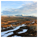
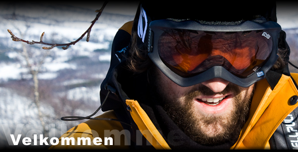
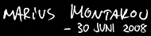

Turlogg:
Andre dag på sykkel
19. Mai 2009, 13:00
Avgang etappe 14!
18. Mai 2009, 12:00
Bilder (igjen)
14. Mai 2009, 18:00
Tilbakefall på Geilosyken
14. Mai 2009, 16:00
Reisebrev:
 |
Etappe 6: Hegra - Gressli 10. November |
Fotogalleri:
 |
Etappe 15: Ljosland - Lindesnes 16. Mai |
Videogalleri:
Klipp fra oppvarmingsturen i Finland, mer kommer etter hvert...
05. Februar
Posisjon:
Regelmessig oppdatering av hvor vi befinner oss.
Rasmus og Eike sin friluftsblogg
www.norgepaakryssogtvers.net
Jens Nilsens telemarksklubb!
www.halddetoppen.no
Magasin for naturopplevelse
www.friluftsliv.no
NPL-Ekspedisjoner
vi har møtt:
Oddvar og Anne
www.repstad.net
Frederik
www.frederikpaatur.blogspot.com
Tom og Simon
www.keeperifokus.no
Tonice og Arnt Helge
www.tureroveralt.no



Da er det endelig avgjort at det blir langtur! Norge skal krysses fra nord til sør det kommende året! Høsten 2008 setter to glade vandrere ut fra Nordkapp i håp om å nå helskinnet gjennom vår langsgående rute nedover Norges land. Ruta vil inneholde vidder, skoger og fjell kledd i nesten alle årstidene. Tidsperspektivet er ca seks måneder, tre før jul og tre etter.
Hvorfor spør mange. Et stort spørsmål for noen, helt naturlig for andre. Er det en flukt fra hverdagen? En asketisk øvelse? En test eller en utfordring? En søken etter noe annet? En annerledes hverdag? Antageligvis litt av alle disse tingene, men fremfor alt handler det om å leve ute i og med naturen over tid. Ren glede over å være ute og bryne seg på naturens meny av utfordringer; holde varmen, bli mett, finne en god leirplass, eller få liv i bålet.
Jeg legger på ingen måte skjul på at å legge vekk klokka, mobilen og universitetet er noe av poenget å komme nærmere noe vi stadig beveger oss bort fra i hverdagen. Hva dette noe er håper jeg å finne ut. Det vil i så fall bli publisert her!
Viktig er det også å nevne at dette ikke er et rekordsforsøk. Snarere tvert imot. Her er veien målet. Det å kunne se mot horisonten vitende om at bak den er en ny horisont, og bak den enda en, og tenke at «over den skal vi» blir et eventyr. Vi legger bort vekkerklokka, timeplanen og de andre heftelsene som hører sivilisasjonen til og lar bekymringene dreie seg om å holde varmen, finne brensel, få ørret i gryta og tørke sokker.
På denne siden vil vi prøve å holde deg oppdatert på hva som skjer, så du kan få med deg alt som går galt og glatt underveis.
Før Norge på langs 08/09 skal jeg på en måneds kanotur i Nord-Finland. Det blir en glimrende innledning til livet i villmarken! Bilder fra denne turen vil også bli lagt ut på denne siden.
